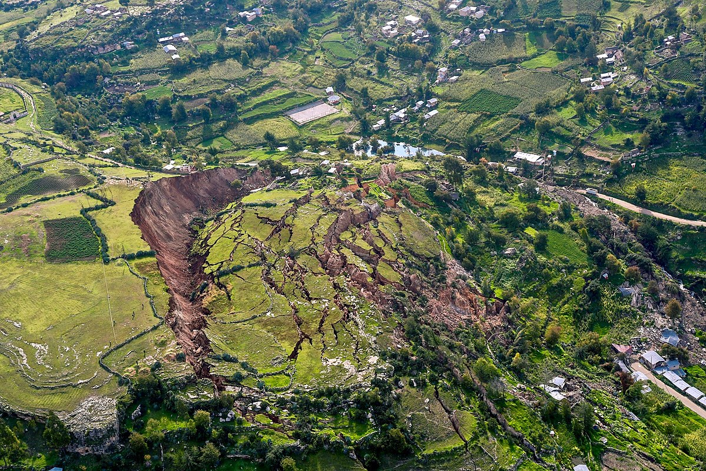

Purpose of the Project
The purpose of this project is to solve major landslide issues in developing countries.
The major causes of landslides are slope, water runoff, and deforestation. Attempting to prevent a landslide with
retaining walls and heavy machinery is too expensive in developing countries. Thus, the most cost effective solution
will be to plant trees in these high risk areas.
Goals
- Create an app that will show dangerous landslide areas.
- Start with one country: Columbia.
- Show users where they can plant to prevent the landslides.
This project will be complete when 3 tasks have been accomplished. First, have a running website. Second, have a model this solves the problem. Third, help people.